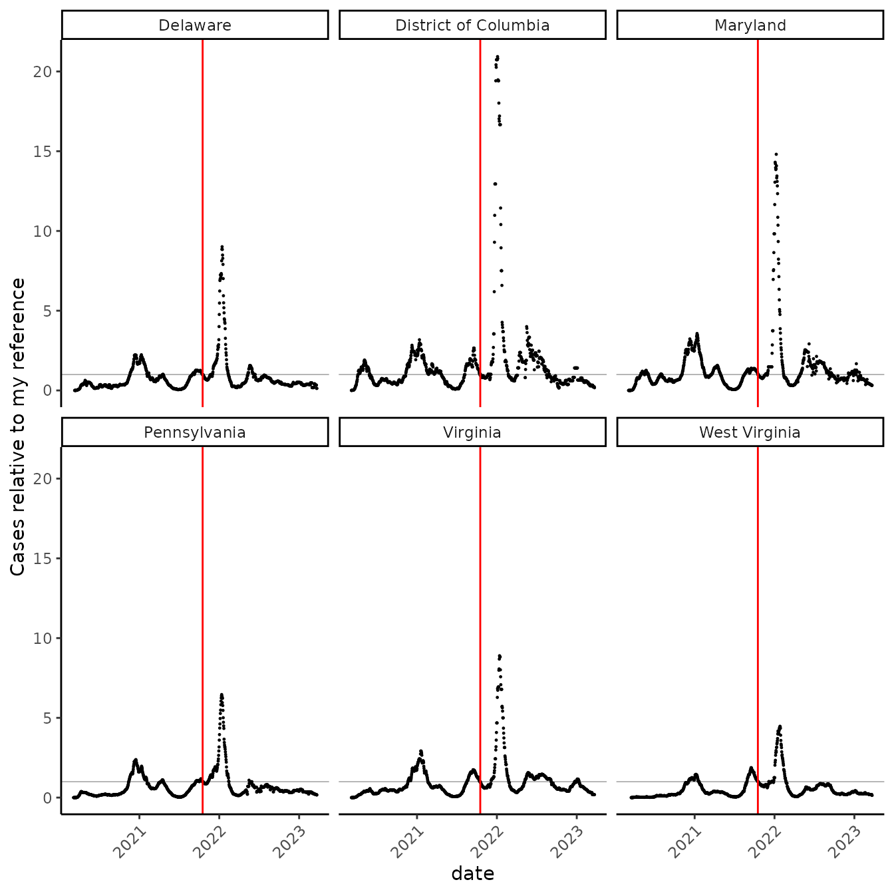
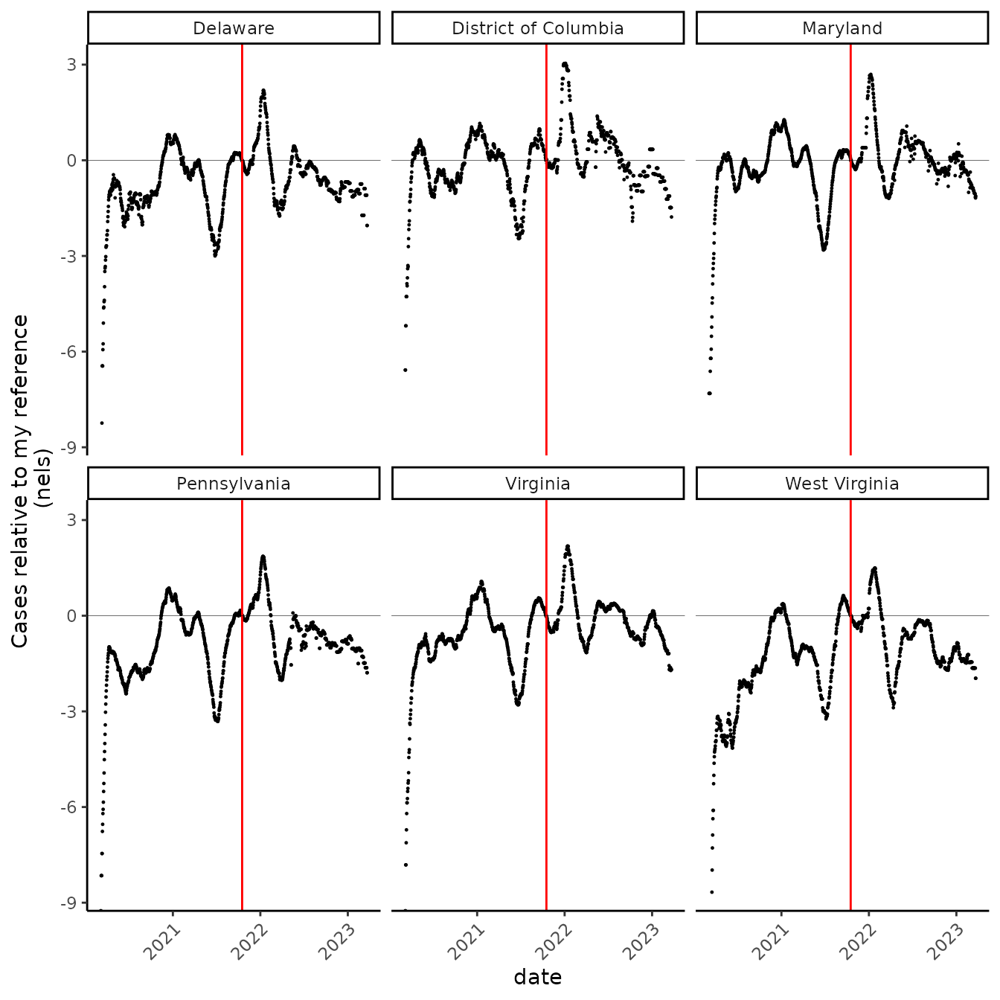
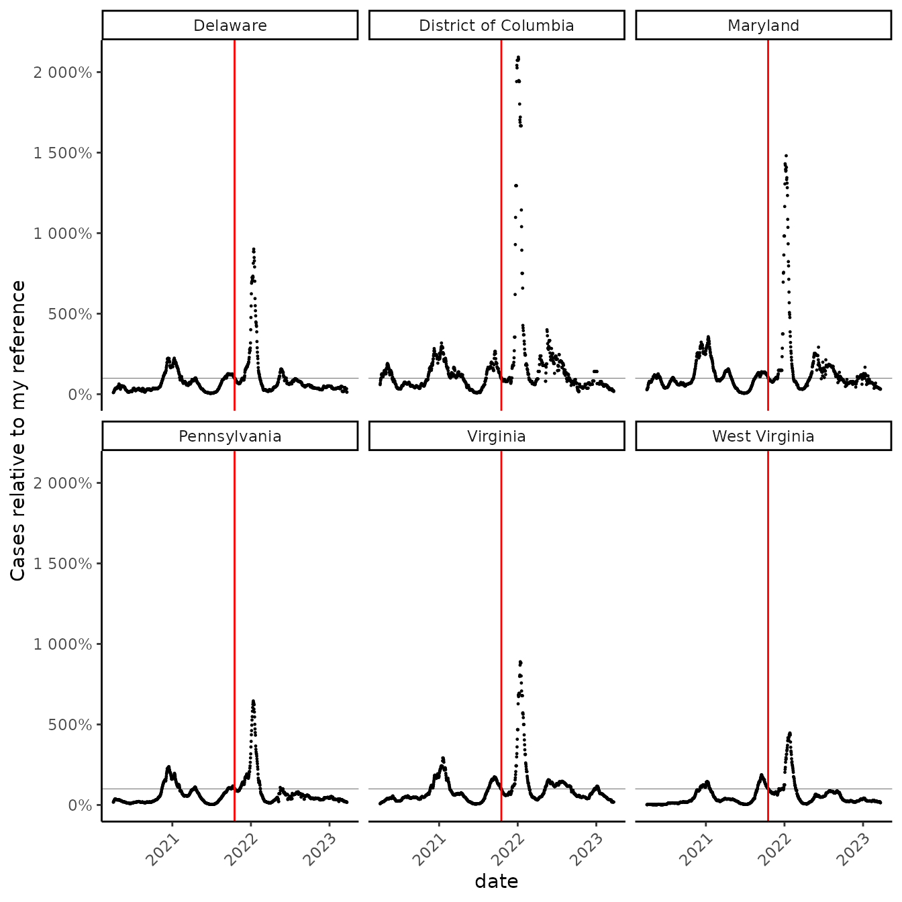
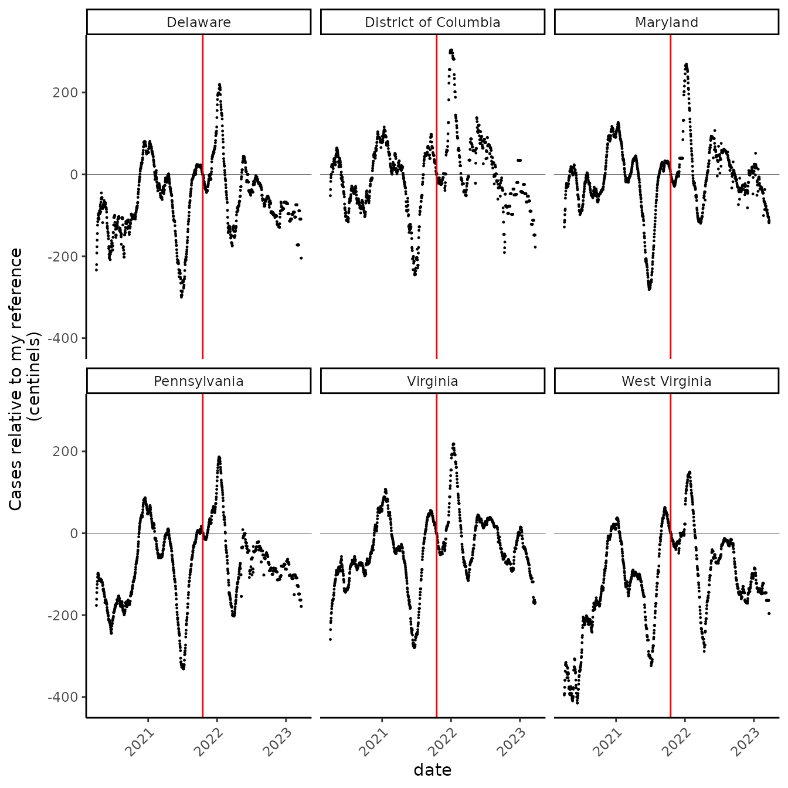
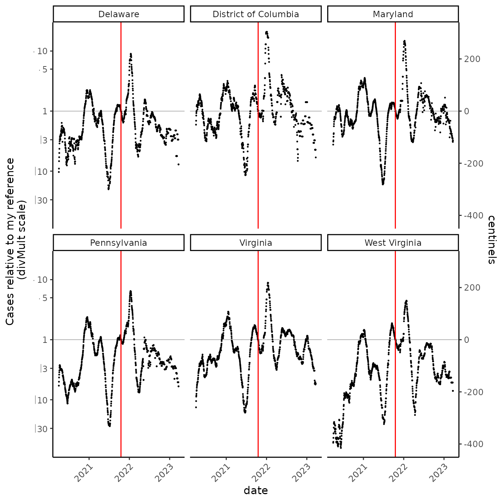

Ratio scales and centinels
Ratio_scales_and_centinels.Rmd
library(ratioScales)
library(dplyr)
library(tidyr)
theme_set(theme_classic() +
theme(axis.text.x = element_text(angle = 45,
vjust = 1, hjust = 1)))Hook
I’ve been staring at the NY Times COVID data obsessively, nearly daily, for most of the past two years. Not only am I on the look out (a sentinel), but I even try to make some decisions on the basis of these data, trying to understand the disease prevalence in my region as I evaluate which activities seem like reasonable risks.
I’ve noticed the NYT shows the case rates on an arithmetic scale, which I think makes my work a bit harder. Here is an exploration of some alternative scales and units (all the scale and unit ideas here are from Jonathan Dushoff, but I wrote this up in March 2022 to understand them all), which might help me make more sense of the data and think more clearly about the risks I take.
First, grab the data, which are freely available on github:
Data acquisition, crunching
# vid <- read.csv("https://github.com/nytimes/covid-19-data/raw/master/rolling-averages/us-states.csv")
data(vid, package = "ratioScales", verbose = TRUE)
#> name=vid: found in Rdata.rds
head(vid)
#> date geoid state cases cases_avg cases_avg_per_100k deaths
#> 1 2020-01-21 USA-53 Washington 1 0.14 0 0
#> 2 2020-01-22 USA-53 Washington 0 0.14 0 0
#> 3 2020-01-23 USA-53 Washington 0 0.14 0 0
#> 4 2020-01-24 USA-53 Washington 0 0.14 0 0
#> 5 2020-01-24 USA-17 Illinois 1 0.14 0 0
#> 6 2020-01-25 USA-53 Washington 0 0.14 0 0
#> deaths_avg deaths_avg_per_100k
#> 1 0 0
#> 2 0 0
#> 3 0 0
#> 4 0 0
#> 5 0 0
#> 6 0 0The first thing I’m going to do is establish a reference point for myself. I gathered with >150 vaccinated people without masks in October of 2021. This was right at the edge of what seems like an ok risk to me, so I’ll set it as a reference point.
ref_date <- vid %>% filter(date =="2021-10-17") %>% select(state, ref_case_rate = cases_avg_per_100k)
new_vid <- vid %>% left_join(ref_date, by = "state")Just to make my life easier, I’m going to add a couple columns that rescale the average daily case rate per 100,000 residents vis-a-vis this reference date, one on the arithmetic scale and the other on the log scale. Also, to make life easier I’ll drop all states except my imediate neighbors in Maryland.
Scales
I’ve grown accustomed to staring at the data on an arithmetic scale. Here, “1” represents a rate equivalent to the one on that date when I was somewhat comfortable with >150 other maskless, vaccinated people:
nel_vid %>%
ggplot(aes(date, prop_rate))+
geom_point(size = 0.2)+
facet_wrap(~state) +
geom_hline(yintercept = 1, size = 0.1) +
geom_vline(xintercept = as.Date("2021-10-17"), color = "red") +
scale_x_date() +
labs(y = "Cases relative to my reference", x = "date")
#> Warning: Using `size` aesthetic for lines was deprecated in ggplot2 3.4.0.
#> ℹ Please use `linewidth` instead.
#> This warning is displayed once every 8 hours.
#> Call `lifecycle::last_lifecycle_warnings()` to see where this warning was
#> generated.
Now, “5” means the cases were 5x as high, and “0.2” (which is hard to pick out) means the cases were 1/5 as high. The first thing that jumped out to me is that, in all the neighboring states, cases are now lower than they were on my reference date! But, on this scale, it’s very hard to see by how much.
An alternative to using the arithmetic scale is to use a natural logarithmic scale. Whereas in the graph above, 2 represented double my reference case rate, on the natural log scale, 2 means… “2 nels”. The really nice thing is that “nels” are symmetrical in terms of changes in the case rate: if the rate doubles, the graph goes up by about 0.7 nels, and if it halves, the graphs go down by the same about (about 0.7 nels).
Let’s look at the graph plotted in “nels”:
nel_vid %>%
ggplot(aes(date, nel_rate))+
geom_point(size = 0.2)+
facet_wrap(~state) +
geom_vline(xintercept = as.Date("2021-10-17"), color = "red") +
scale_x_date() +
geom_hline(yintercept = 0, size = 0.1) +
labs(x = "date", y = "Cases relative to my reference \n(nels)")
WOW! I see so many things in this graph! The first thing to jump out is how incredibly good it got in summer 2021, which was very hard to discern in the graph above. Looks like in early July last year, cases were 3 nels lower than even my reference, which I considered to be a relatively good time (though the Delta variant was pretty horrid then, especially in some parts of the USA).
Another things that jumps out is that maybe I should drop the early data. First off, there’s lots of reasons to ignore them anyways, since testing infrastructure was so different then, and second off, they make the range of the graph go really low, below minus nine “nels.”
So, what is a nel? You’ve probably guessed, it’s called that because it is one Natural Log unit, (one NL; one “nel”). A nel is a big number: 1 nel is over 2.5 times my reference rate, and 2 nels is over 7 times my reference rate.
Once I drop the very early data, I might see that a “nel”, like a “bel”, might be an awkwardly sized unit for the kinds of changes I’m most interested in, so we’ll look at “centinels” instead. This is the same idea as changing from a proportion to a percent.
Centinels!!!
# drop before april 2020
cut_vid <- nel_vid %>% filter(date > as.Date("2020-04-01"))
# we are used to using percents instead of proportions
cut_vid %>%
ggplot(aes(date, prop_rate))+
geom_point(size = 0.2)+
facet_wrap(~state) +
geom_hline(yintercept = 1, size = 0.1) +
geom_vline(xintercept = as.Date("2021-10-17"), color = "red") +
scale_x_date() +
scale_y_continuous(labels = scales::percent) +
labs(y = "Cases relative to my reference", x = "date")
# now "centinels" instead of "nels"
cut_vid %>%
ggplot(aes(date, nel_rate*100))+
geom_point(size = 0.2)+
facet_wrap(~state) +
geom_vline(xintercept = as.Date("2021-10-17"), color = "red") +
scale_x_date() +
geom_hline(yintercept = 0, size = 0.1) +
labs(x = "date", y = "Cases relative to my reference \n(centinels)")
“Centinels” look like they could be nice units for staring at this, but what the heck is 1 centinel? Amazingly, a centinel isn’t that funky a unit. Plus one centinel is pretty close to a 1% increase!
let’s take a look:
x <- c(100, 5, pi)
# 1% increase
y <- x*1.01
z <- x *0.99
w <- x / 1.01
centinel <- function(x, ref){
100*log(x/ref)
}
percent <- function(x, ref){
100*(x/ref -1)
}
percent(y, x)
#> [1] 1 1 1
# it's pretty close
centinel(y, x)
#> [1] 0.9950331 0.9950331 0.9950331
# compare to decreases
percent(z, x)
#> [1] -1 -1 -1
# these are all close too
percent(w, x)
#> [1] -0.990099 -0.990099 -0.990099
centinel(z, x)
#> [1] -1.005034 -1.005034 -1.005034
centinel(w, x)
#> [1] -0.9950331 -0.9950331 -0.9950331
# percents go additively, though. So it's hard to think about compounding them
# which is what we usually want to do when things change
# if COVID went up by 1% a day for five consecutive days, it would go up by
# about 5 %.
1.01^5
#> [1] 1.05101
# But if it went up by 1% a day for fifty consecutive days
1.01^50
#> [1] 1.644632
# it would go up by more than 60%. This can really trip me up!
# centinels compound much more sensibly
compounded <- function(x, change, times){
x*change^times
}
# compound 1% 50 times, you get a 64% increase
percent(compounded(x, 1.01, 50), x)
#> [1] 64.46318 64.46318 64.46318
# but a 50 centinel increase :-)
centinel(compounded(x, 1.01, 50), x)
#> [1] 49.75165 49.75165 49.75165
# try going backwards
percent(compounded(x, 0.99, 50), x)
#> [1] -39.49939 -39.49939 -39.49939
# that's annoying. Only 39% now?!?!
centinel(compounded(x, 0.99, 50), x)
#> [1] -50.25168 -50.25168 -50.25168
# still a change of 50 centinels
# and more precisely opposite
centinel(compounded(x, 1/1.01, 50), x)
#> [1] -49.75165 -49.75165 -49.75165We like centinels. The name is fun, and they are helpful for thinking about compounded changes. They balance around the reference point. Maybe we can use them more. But it will take some practice to become fluent in interpreting them.
I rely on benchmarks: Beyond the 1% thing, I also know that 70 centinels is roughly doubling, 140 is doubling ~2x, and 210 is doubling ~3x. To get to know centinels better, though, I need to get more familiar with centinel values on the “divMult scale:” instead of “69.3,” “138.6,” and “207.9,” and translating, I’ll have an easier time when I see “2,” “4,” and “8.”
Ratio scales
cut_vid %>%
ggplot(aes(date, prop_rate))+
geom_point(size = 0.2)+
facet_wrap(~state) +
geom_vline(xintercept = as.Date("2021-10-17"), color = "red") +
scale_x_date() +
scale_y_ratio(
tickVal = "divMult"
, slashStar = FALSE
, sec.axis = sec_axis( trans = ~log(.)*100
, breaks = scales::breaks_extended(n = 6)
, name = "centinels")
) +
geom_hline(yintercept = 1, size = 0.1) +
labs(x = "date", y = "Cases relative to my reference \n(divMult scale)" )
With the ratio scale as a guide, I feel I can navigate centinels more easily… but maybe I just prefer the ratio scale? On the ratio scale, the reference is 1 (it could be \(\times 1\) or \(\div 1\), either is an identity). Then, labels indicate symmetrical geometric changes (e.g., \(\times 2, \div 2; \times 12, \div 12\)). This scale preserves the symmetry of log scales, but the labels have units, and operators, that make concrete, intuitive sense to me.
What have I learned about COVID-19 in my area? Things got really bad this winter, which I knew… but I have a clearer quantitative sense of now. Also, as I already knew, times have been getting better, but now I see how fast! If I take the NYT daily case rate as a good prevalence estimate, the prevalence of COVID-19 is now less than half what it was in mid-October 2021, when the Delta surge was subsiding. Although mask mandates in the region have been lifted recently, the prevalence continues to fall at a good clip, with only slight indications that lifting mandates has slowed the subsidance. If my risk tolerance is similar to what it was in the fall, I should feel pretty good now about gathering with people who are vaccinated and important to me :-).